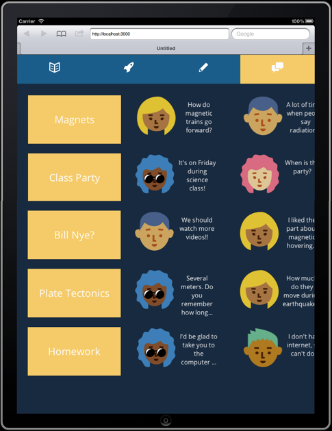
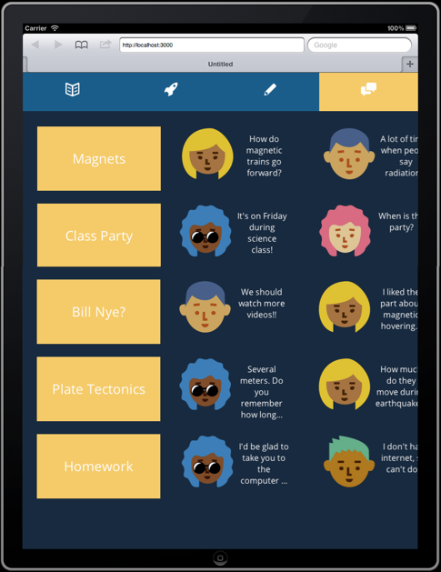

Kate Jenkins Mercado
Mechanical, inflammable, insufferable.


Home
Boing
Synesthesia
Marmot Creek
The Glass Banana
LASER
Tesselcopter
Hackathons
Travels
Boing
Boing is a companion app for fifth and sixth grade science classrooms. Teachers can upload video or document content, enable classroom discussions, and provide online interactive notes. We even made a screencast showing some of the key features.

 

Cool, right? What you don’t see that is also cool is the fact that we -- @georgebonnr, @kelWill, @stangah, @katemonkeys -- built it as part of a private beta test for famo.us, a futuristic JavaScript development platform. We took advantage of the famo.us 3D rendering and physics engines, which manipulate DOM elements around the screen using millions of matrix transformations calculated through the GPU, not the CPU, so a browser-based app can be as fast as native and equally easy to develop for mobile, tablet, TV, or desktop. You can play with somewhat obfuscated versions of their widgets over at codepen or just hang out till February 2014 to see it in its open source glory.
I mostly built the games. In the simple game that ended up in the final product, I just used gesture tracking and imposed some physics-based principles to make the motion feel more realistic: particle drag, walls around the edge of the screen so a kid can’t fling the pieces out of view, torque and a finite moment of inertia around the centroid of the gamepiece to make it more visually dynamic.
I also built a simplified version of Portal, where the user drives a “magnet” around to push other balls into goals for points, and the particles would then teleport to different areas of the screen with different matrix transformations. This version implements a concept of materials behavior by using two independent sets of physical parameters for different gamepieces: those of “wood” were only subject to collisions from the magnet main piece, but those of “metal” could be pushed in groups at a distance using interparticle repulsion and flocking rules.
The third game is crazy fun for both the user and the observers. It’s a pitch matching game using .getUserMedia to stream microphone input that drives the control flow for how to render the DOM tree, instead of touch-based gestures to position a player’s pieces. It means that a player sings to their computer as they play in order to make the pieces behave as they wish, so it is the most fun for their friends to watch and cheer.
Building Boing was a lot of fun. We the authors really hope it gains some traction as a useful educational tool, and that you have as much fun writing, learning, chatting, and playing with it as we did making it.